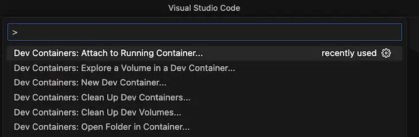
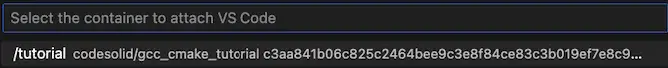
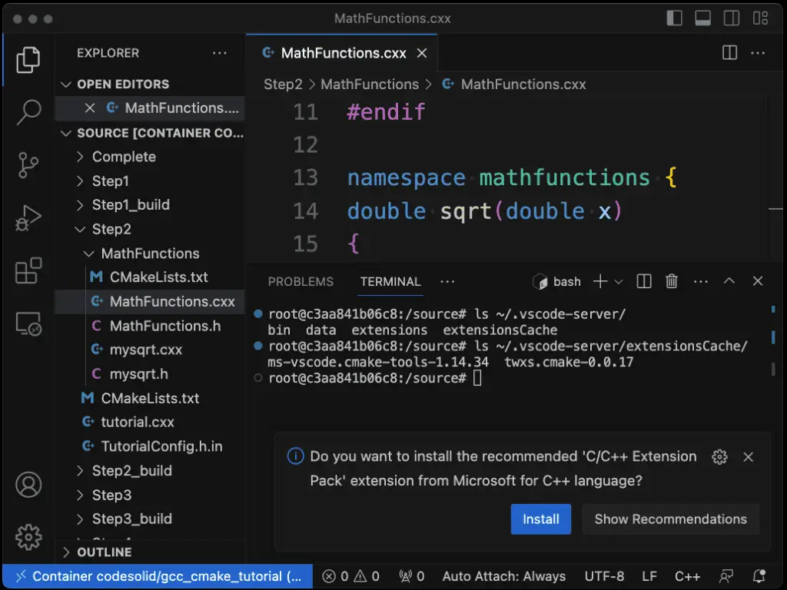
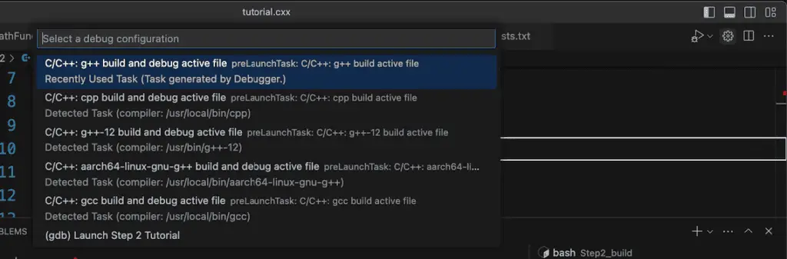
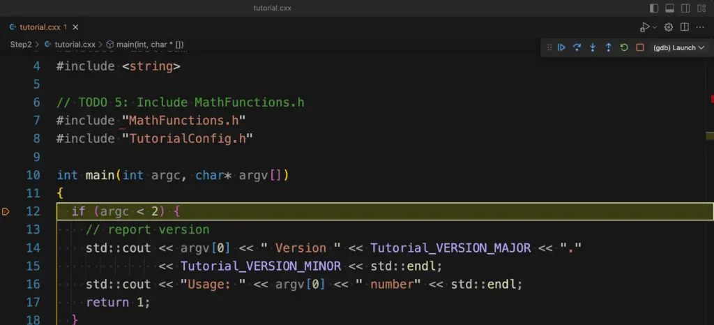

Running the CMake Tutorial in a VS Code Dev Container¶
Introduction¶
Though frequent readers of this blog will know that it’s been focused largely on Python until now, I recently decided to revisit the two languages I started my career with some thirty-three years ago: C and C++. Even after many years, C and C++ are still quite popular languages. As of July 2023, Python, C, and C++ are the three most popular languages in the TIOBE index. Though I’m impressed with Rust, and its popularity is rising, as a blogger, I hesitate to commit too much time to a language that is still relatively unpopular.
Moreover, C and C++ complement the Python focus of this blog very nicely. What we usually think of as Python – CPython – is written in C, and many familiar C extensions, such as NumPy, make heavy use of optimized C code. (The same is beginning to be true of Rust with libraries such as PolaRS, but the use of C extensions in Python is much more widespread).
Broadly speaking, compared to Python, C/C++ are two languages that are significantly faster than Python and much more widely used in system programming and embedded programming. The cost for this runtime speed is a steeper learning curve and greater programmer responsibility for memory management and other “low-level” concerns that Python handles automatically.
Limits of C/C++ for Cross-Platform Development¶
One such concern that strikes you right away is that C/C++ programs need to be explicitly compiled and linked in a separate step, tasks that take place transparently when you run Python scripts through the interpreter. Unlike in Python, moreover, the tools to do this are different depending on your environment. With rare exceptions, the Python executable works pretty much the same across all platforms, whereas in the C/C++ world, this is not the case. Linux developers use gcc to compile their programs along with other third-party make tools to build their programs. Since GCC does not work on Apple Silicon, developers there are locked in for now to a choice between Clang or XCode. On Windows, developers frequently use Visual Studio, Microsoft’s development tool for C/C++, and other languages.
As you might have guessed already, this variety of different tools would be something of a disadvantage to developers targeting multiple platforms. To mitigate this disadvantage, a number of cross-platform build tools have been created over the years that attempt to automatically do the right thing for whatever target platform you’re on. One of the most popular of these tools is CMake, which is widely used for many open-source packages and widely supported across a number of IDEs, including Visual Studio, XCode, and CLion.
A Special Use Case¶
In addition to wanting to explore and master CMake, I also wanted to be in a position to try some simple embedded programming projects, especially using a Microbit processor. From my earlier explorations with Rust, I discovered that this really would be much easier to do if GDB were available (it’s not on Apple silicon, i.e., M1/M2-based systems).
With this in mind, even though I could run the CMake tutorial (without GDB, of course) on a Mac without issues, I decided to try my hand at building CMake from source in a Docker container. This would – in principle – allow me to use the same development setup to eventually work on embedded projects directly from the Mac without spring for an expensive upgrade for my aging Windows and Linux hardware.
The rest of this article details how I did this, which you may find useful as a refresher on some Docker techniques. For those of you who’d rather cut to the chase and already know your way around Docker, you can use the containers we’ll build here directly if you wish. I’ve pushed the final container to Dockerhub as codesolid/gcc_make_tutorial, so you can pull it from there directly. The code for this article is located in the repository https://github.com/codesolid/c.
First Steps: Building CMake from Source in Docker¶
My first step was to locate a Linux-based container with the gcc compiler already installed and add CMake to that container. One of the more reliable ways to install CMake is to build and install it from the source. Though somewhat slower than installing a package, this method has the advantage of also picking up the tutorial source that we want to use in a subsequent step. Rather than have a long series of run commands in the Dockerfile, I decided to move a lot of the install steps to a shell script and simply call it. Here’s the shell script I used:
#!/bin/bash
# File: install_cmake.sh
# Installs CMake on Linux
CMAKE_VERSION="3.27.0"
# Skip if already installed.
if ! command -v cmake &> /dev/null
then
mkdir /cmake-source
cd /cmake-source/
wget https://github.com/Kitware/CMake/archive/refs/tags/v$CMAKE_VERSION.tar.gz
tar xfvz v$CMAKE_VERSION.tar.gz
cd CMake-$CMAKE_VERSION/
./bootstrap
make
make install
fi
The associated Dockerfile thus becomes fairly lightweight, consisting mostly of copying and running the shell script:
# Dockerfile
FROM gcc:latest
COPY ./install_cmake.sh .
RUN chmod u+x ./install_cmake.sh
RUN ./install_cmake.sh
Building from the CMake source takes a few minutes. This command does the trick:
docker build -t codesolid/gcc_cmake .
If desired, we can test that the CMake install did the right thing.
docker run -it codesolid/gcc_cmake /bin/bash
cmake --version
Isolating the Tutorial Source With a Multi-Stage Build¶
Now that we’ve worked through the basics of installing CMake only, we decided to rewrite (ahem: “iteratively enhance”) our project to use a multi-stage Docker build that also installs the source.
In our install_cmake shell script, the only change we need is to remove the hard-coded CMake version. Instead, we now accept the version number as an argument, as follows:
if [ $# -eq 0 ]
then
echo "No arguments supplied"
exit 0
fi
CMAKE_VERSION="$1"
Our Dockerfile is almost all brand new, however. We add code to move the tutorial source to a more convenient directory, remove the rest of the CMake source code since we’ll no longer need it, and install gdb for good measure.
# Build/install CMake as before
FROM gcc:latest AS gcc_cmake
ENV CMAKE_VERSION=3.27.0
COPY ./install_cmake.sh .
RUN chmod u+x ./install_cmake.sh
RUN ./install_cmake.sh ${CMAKE_VERSION}
# Copy the source to a more convenient directory
FROM gcc_cmake AS gcc_cmake_tutorial
WORKDIR /source
RUN cp -R /cmake-source/CMake-${CMAKE_VERSION}/Help/guide/tutorial/* /source
# Clean up source and install gdb so it's available.
RUN rm -rf /cmake-source
RUN apt-get update && apt-get install gdb -y
You can build the container with this command:
docker build -t codesolid/gcc_make_tutorial .
If you’d prefer to see all the output and not just the truncated log message, you can build it as shown below. (This can be useful if you need to troubleshoot the execution or if you’re just wondering what it’s doing all this time).
docker buildx create --use --name larger_log --driver-opt env.BUILDKIT_STEP_LOG_MAX_SIZE=50000000
docker buildx build --progress plain -t codesolid/gcc_cmake_tutorial .
Accessing the Tutorial from the Container and the Host¶
Creating a Volume in a Local Directory and Mounting It¶
In order to access the source code and keep it available from one run to the next, even if we stop the container, we need to do more than pass a simple volume to the run command. Instead, we create a permanent volume mapped to a local “source” directory. This is a one-time operation:
mkdir -p ./source
docker volume create --driver local \
--opt type=none \
--opt device=$(pwd)/source \
--opt o=bind \
gcc_make_tutorial_source
That done, we can now use the –mount switch in the docker run command to mount a volume in the container to the volume on the host that we created in our last step.
docker run --rm -it --name tutorial \
--mount type=volume,src=gcc_make_tutorial_source,target=/source \
codesolid/gcc_cmake_tutorial /bin/bash
This will bring up a bash prompt in the container. You can verify that the mounting was successful and the files are available on both the container and the host by comparing the contents of a directory. For example, on the container:
root@c3aa841b06c8:/source# pwd
/source
root@c3aa841b06c8:/source# ls Step5
CMakeLists.txt MathFunctions TutorialConfig.h.in tutorial.cxx
root@c3aa841b06c8:/source#
On the host:
(base) source % pwd
/Users/johnlockwood/source/CodeSolid/c/gcc_cmake_tutorial/source
(base) source % ls Step5
CMakeLists.txt MathFunctions TutorialConfig.h.in tutorial.cxx
(base) source %
Note that we want to leave this container running so we can use it in the next section.
Using VS Code’s Dev Container Extension¶
Rather than be limited to editing the code from VS Code on the host, the VS Code “Dev Containers” extension lets you connect to either a pre-existing Dev Container developed by Microsoft or attach to a running container you’ve developed yourself. We’ll show the latter case here, but it’s worth mentioning that the Visual Studio Dev Container for C++ includes CMake (though not the tutorial source, as far as I’m aware).
With the Dev Container extension installed, as with most extensions, you use the Command Pallete (CMD-SHIFT-P or CTRL-SHIFT-P) to access the extension’s features. If you start typing “Dev”, you can search for and run the command labeled “Dev Containers: Attach to Running Container”:

Here you’ll see your running tutorial container in the list of available containers.

Selecting it will open a new VS Code window, opening the source folder on the container. From here, if you open a terminal, it will automatically be a terminal in the container, not on the host. If you open a C++ file, it may prompt you to install an additional extension (as you’d expect if you were working on the host).

Using the Dev Containers plugin with the C++ Extension Pack, I discovered that it does just what I want it to do. That is, it lets me build and debug code on the container from within VS Code. To demonstrate this, I’ve checked the code for the tutorial solutions I’ve worked on so far in this repository folder. (If you’ve been following along in the gcc_cmake_tutorial folder, that’s fine – simply copy the repository folder’s source to the source folder in gcc_cmake_tutorial).
If you have the tutorial solution files in place, you can open a terminal prompt in the VS Code window that’s attached to the dev container. Create a source/Step_2 folder if you don’t have one already, and from that directory, run these commands to build the Step 2 project in debug mode:
cmake -DCMAKE_BUILD_TYPE=Debug ../Step2
cmake --build .
What this does is create a debug symbol table and link it to the executable so that, for example, we can step through our code in the debugger. Before we do this, however, we have a couple of quick things to do. First, we need a launch configuration for VS Code. To do this, from the Run menu, select “Open Configurations”. This should open the file launch.json. Here’s the configuration that I have, so if your file is more or less blank, you can just copy this in as-is:
{
// Use IntelliSense to learn about possible attributes.
// Hover to view descriptions of existing attributes.
// For more information, visit: https://go.microsoft.com/fwlink/?linkid=830387
"version": "0.2.0",
"configurations": [
{
"name": "(gdb) Launch Step 2 Tutorial",
"type": "cppdbg",
"request": "launch",
"program": "${workspaceRoot}/Step2_build/Tutorial",
"args": ["16"],
"stopAtEntry": false,
"cwd": "${fileDirname}",
"environment": [],
"externalConsole": false,
"MIMode": "gdb",
"setupCommands": [
{
"description": "Enable pretty-printing for gdb",
"text": "-enable-pretty-printing",
"ignoreFailures": true
},
{
"description": "Set Disassembly Flavor to Intel",
"text": "-gdb-set disassembly-flavor intel",
"ignoreFailures": true
}
]
}
]
}
The main things that were edited here from a default “(gdb) Launch” configuration are:
The name, which we’ve associated with Step 2 so as not to confuse it with the default or other configurations.
The program line, which points to the executable we just built.
The args line, where we pass the number 16 to our square root function. I know you probably already know the answer to the square root of 16, but of course, we’re here to have fun debugging, not to prove the math.
We’re almost there. Let’s open the file Step2/tutorial.cxx in the editor. We’re now should be ready to launch the debugger, and it should prompt you for the launch configuration we just created. If it doesn’t, or you run into errors, try this: select the correct launch configuration manually. To do this, choose the settings button (see the gear icon) in the upper right-hand corner. It should look something like this with the button pressed:

You may have to scroll, but in the image above, note that the “(gdb) Launch Step 2 Tutorial” configuration is at the bottom, so just select it. Annoyingly, this opens the configuration file again, but it also selects it as current.
You can now use the debugger as you normally would on your own machine. For example, you can set a breakpoint in the first line of the main method, and clicking the start button (upper right) will land you here:

Of course, you have the usual fun variables, watch, and call stack windows over on the left. If debugging C++ or other languages is new to you and you’d like to see a tutorial on it, drop me a comment, and I’ll add it to my to-do list.
If you work in VS Code and like to have the flexibility of being able to browse and debug source in pre-built development environments that others can install easily, I urge you to check out the Dev Containers plugin in VS Code. My experience to date shows me it works flawlessly for C++, and unlike the Docker support in some commercial IDEs – it’s 100% free! I’m confident it probably runs well for other languages as well. As for me, I’m off to do more chapters of the CMake tutorial and start experimenting with my own projects using it.